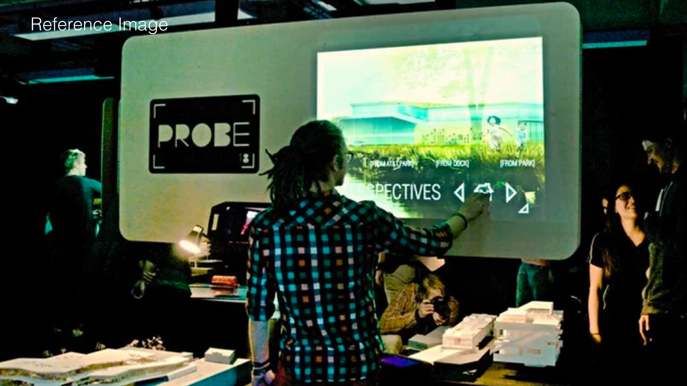

Museum displays have not changed much over a period of time. Many of the displays are still based on a printed visual and text format. In some cases video is used. However, this is a one way approach where the museum disseminates information and the visitor absorbs. How does one make this dissemination of information more engaging. How can information be presented in a non-linear fashion. What happens when it helps the visitor build his own story rather than instruct him / her.
The ongoing research project in collaboration with the CSMVS Museum's Art Conservation Centre in Mumbai, aims to use technological interventions to make consumption of information in the museum setting more interesting. The first phase of this project involves creation of a gesture controlled, touch based data explorer for the Museum. The project will be on display at the ConservArte Exhibition 2016.
We are used to seeing objects in the museum in silos or in groups (era, age, location) that the museum decides for the visitors.
Each artifact contains a number of data parameters (Name, Age, Era, Material, Conservation Process, Location, ).The idea is to give the visitor or a group of visitors an opportunity to explore these correlations through the medium of an interactive data visualization thereby leave them with a little more information than would have otherwise gained with a traditional text and object based exhibit. The visitor would be able to manipulate the visualization to create his/her own story and thereby a unique perspective of the artifacts.
This is a makeshift touchscreen. We can effectively make any surface into a touchscreen and this method extremely interesting opportunities. We would be using the projector to display the visualization and the 3d Camera to get the touch input. This method is both cost effective and theoretically the size of the touch interface is limitless and depends on the resolution of the projector. A major con is that shadows would be visible while using this system.
This system enables multiple touch points to the user and would be used to interact with the visualization.

The process involves creating a visualization of the relationships between museum artifacts. The touchscreen interface needs to be developed separately.
Data visualization, New media, Visualization, Research, Museum, CSMVS, Mumbai, Conservation, touch interface, Artifacts, User Interface, User Experience, d3, Interaction Design, objects, 3d camera, kinect, Prototype, The Chhatrapati Shivaji Maharaj Vastu Sangrahalaya, Prince of Wales Museum